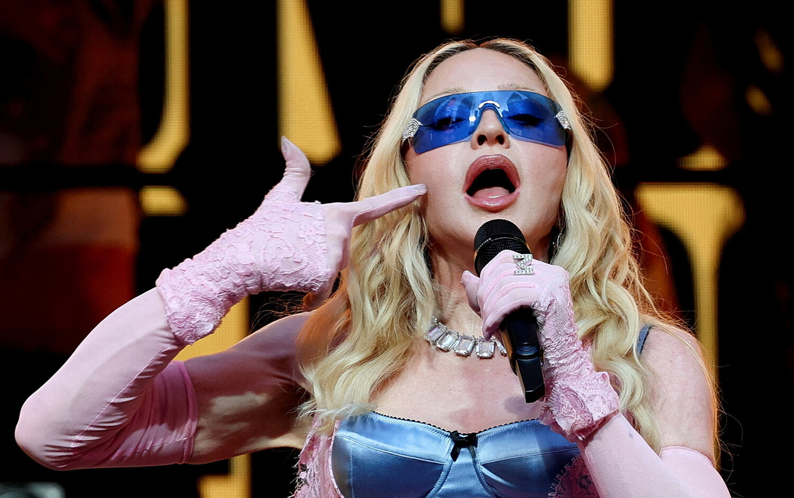
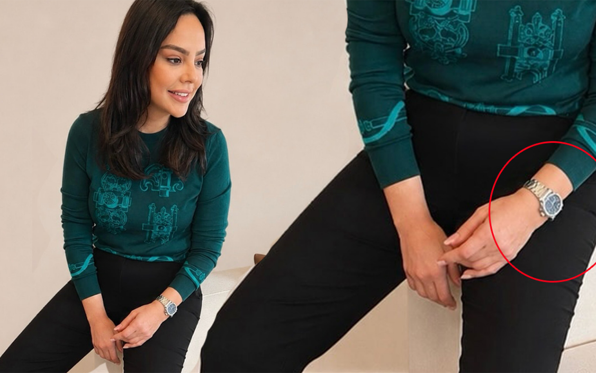

Music news
The latest news about new songs, music videos, concerts and artists.
Shusha hosts the ECO Tourism Capital closing event
Shusha hosted the closing ceremony of the Economic Cooperation Organization Tourism Capital year, and the title passed to another city.
 Weddings
WeddingsPhones banned at a wedding with Rustam Hajiyev and Zulfiyya Khanbabayeva
Guests at a wedding in Baku’s Four Seasons hotel, attended by Rustam Hajiyev, Zulfiyya Khanbabayeva and other stars, were not allowed to use their phones — the decision is being discussed.
 New song
New songAlim Qasimov’s mugham performance will feature in GTA 6
A mugham-style version of a Nelly Furtado song by People’s Artist Alim Qasimov and his daughter Fargana Qasimova will appear in the hit game GTA 6.

ShowbizMadonna earns a Grammy nomination after a long break
Global star Madonna has been nominated for the prestigious music award again after sixteen years.
 Showband
ShowbandOn stage with Lala Mammadova: Showband Group live
Live music, a showman and a DJ — message us for your event.
 Showbiz
ShowbizBeyoncé becomes the first artist with 100 Grammy nominations
Global star Beyoncé has earned her hundredth Grammy nomination, setting a record in music history. Details in our story.
 Showbiz
ShowbizGims faces corruption charges
World-famous rapper Gims will stand trial on serious charges of corruption and financial misconduct.
 Weddings
WeddingsMaxim Galkin attends a wedding in Baku
Famous Russian showman Maxim Galkin reportedly attended a wedding in Baku. Photos shared online drew interest.
 Showbiz
ShowbizBritney Spears launches the BTiny jewellery brand
American pop star Britney Spears has launched her own jewellery brand BTiny, with modern designs aimed at a young audience.
AI named artist of the year for the first time in music history
At the first AI Music Awards in Los Angeles, artificial intelligence was named artist of the year — a historic first for music.
Fees of Turkish stars for New Year concerts revealed
The million-lira fees Turkish showbiz stars ask for New Year’s Eve shows have been revealed. Who earns how much? Details inside.

ShowbizEbru Gündeş turns heads with a million-lira watch
Famous Turkish singer Ebru Gündeş made headlines with a luxury watch in her latest photos, reportedly worth millions of lira.
Aygun Kazimova may sing a duet with a global star
Reports say People’s Artist of Azerbaijan Aygun Kazimova is preparing a new duet with famous American rapper Eminem.
 Concert
ConcertErdoğan’s favourite song performed at Victory Day concert in Khankendi
A favourite song of Türkiye’s leader was performed at a grand Victory Day concert at the Khankendi Congress Centre.
Khatai district celebrates Victory Day with a grand concert
Khatai district hosted a festive concert and fireworks for 8 November — Victory Day. Details on the Showband Group site.
 Showband
ShowbandSədaya: a birthday full of Showband Group surprises
DJ, showman, laser show — make your birthday just as memorable.
 Concert
ConcertDavid Garrett presents a stunning symphonic show in Baku
World-famous violinist David Garrett performed at the Heydar Aliyev Centre. Mehriban Aliyeva and family members watched the show.
The Weeknd overtakes Elton John to set a huge record
Global star The Weeknd has become the top male artist by concert tour revenue.
 Showbiz
ShowbizSinan Özen in a car crash on the Sakarya road after his Tokat concert
Turkish singer Sinan Özen was involved in a car accident near Sakarya on his way back from a concert in Tokat; he and his brother are safe and unharmed.
 Concert
ConcertLeyla and Arzu Aliyeva attend a concert
Leyla and Arzu Aliyeva attended a special concert programme held as part of the “Aria of Paradise” project.
 Showbiz
ShowbizEmrah İpek’s huge fortune and apartments spark debate
Reports that famous Turkish singer Emrah owns hundreds of apartments and earns large rental income have sparked debate.
 Showbiz
ShowbizTajir Shahmalioglu reveals he had stomach reduction surgery
Well-known singer Tajir Shahmalioglu said he had stomach reduction surgery for health reasons and shared the difficulties he went through.
The Netherlands changes course and will skip Eurovision 2027
The Netherlands will not take part in the Eurovision Song Contest 2027 over the Israel issue. The country’s broadcaster has reversed its decision.
No news in this section yet.